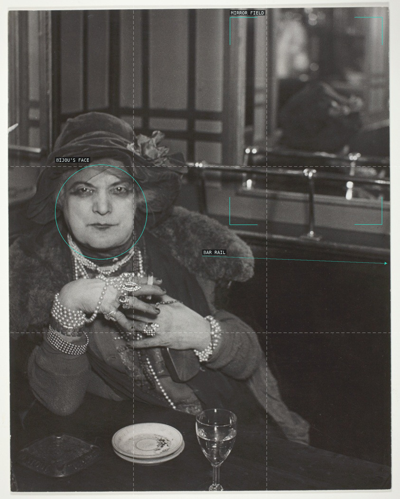
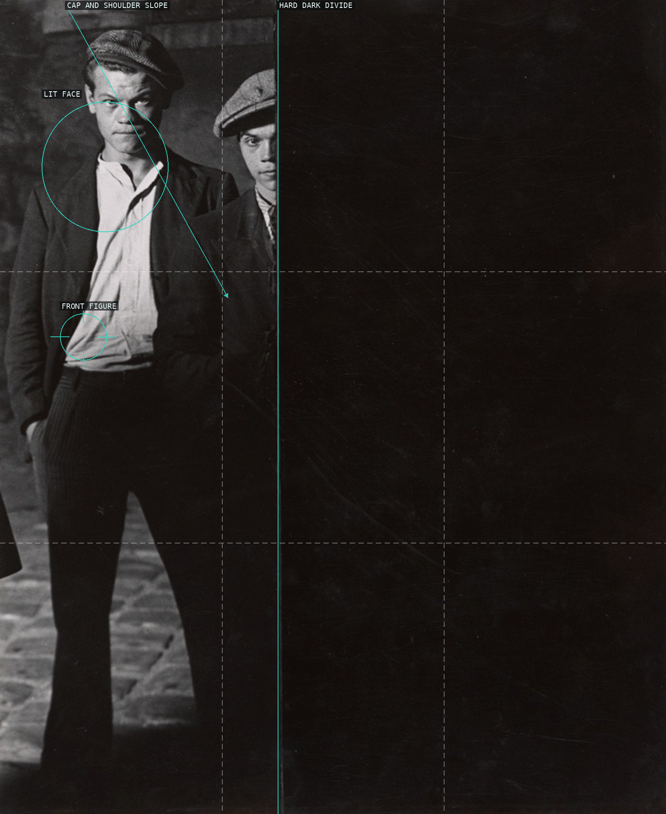
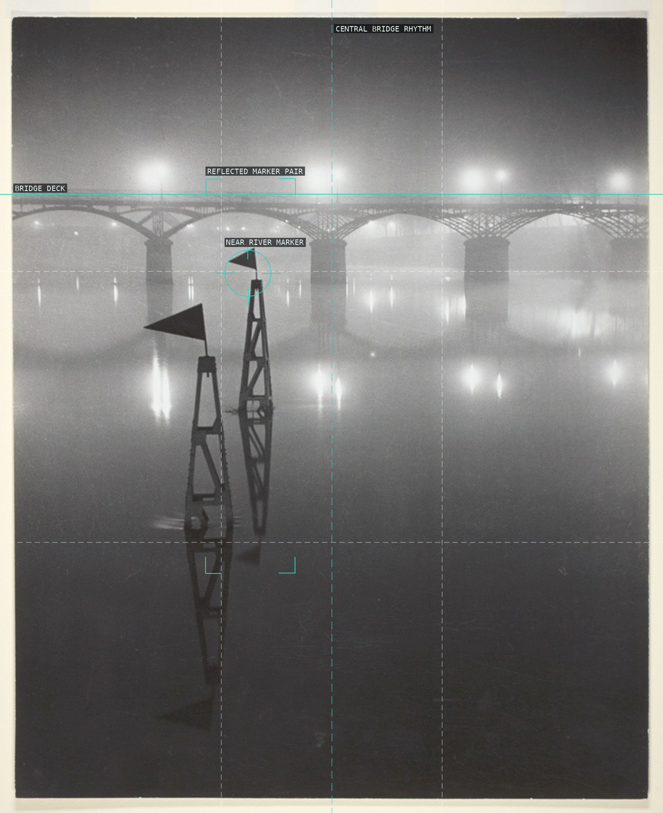
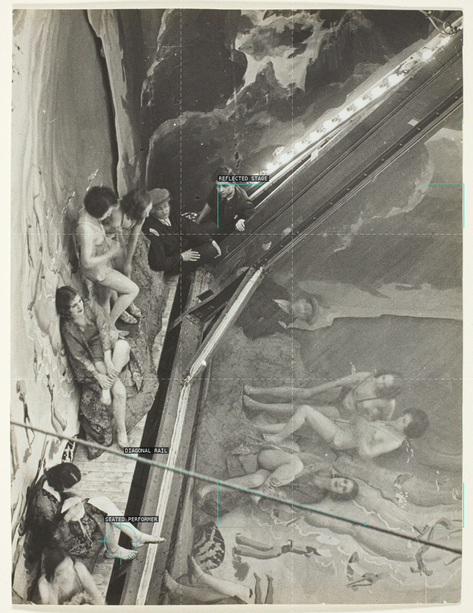
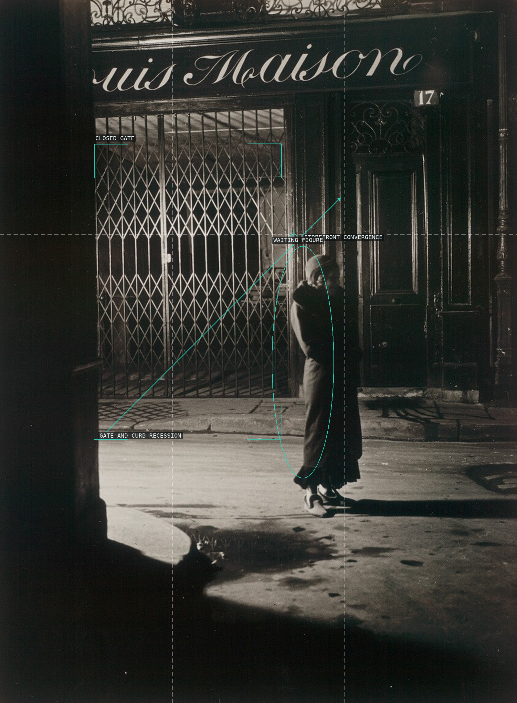
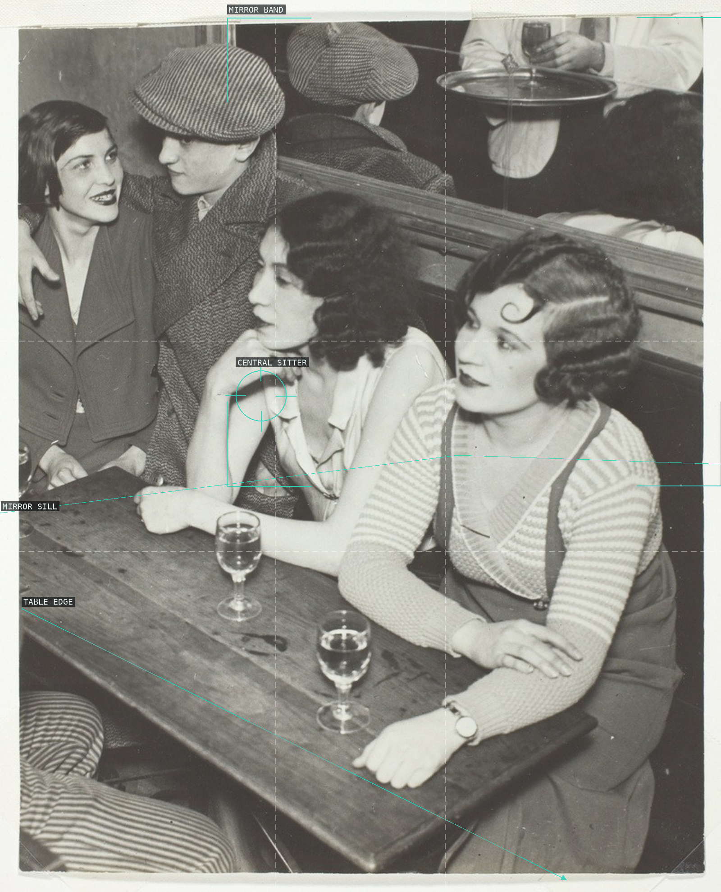
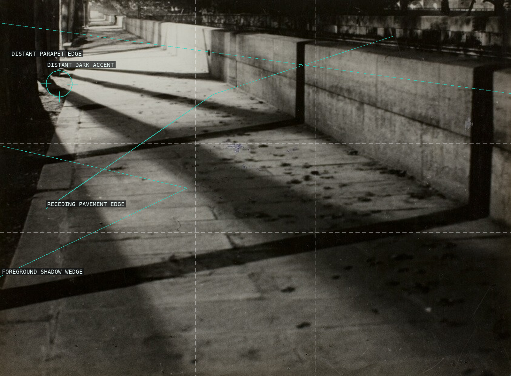
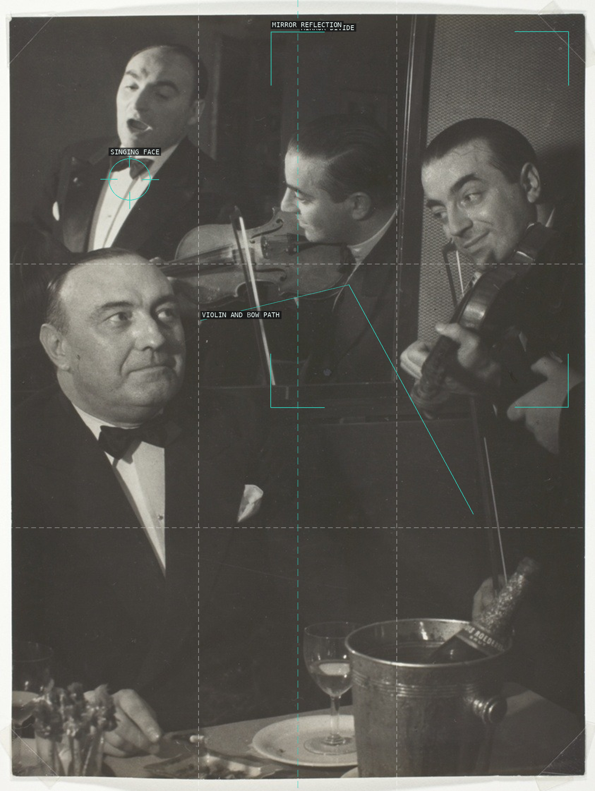
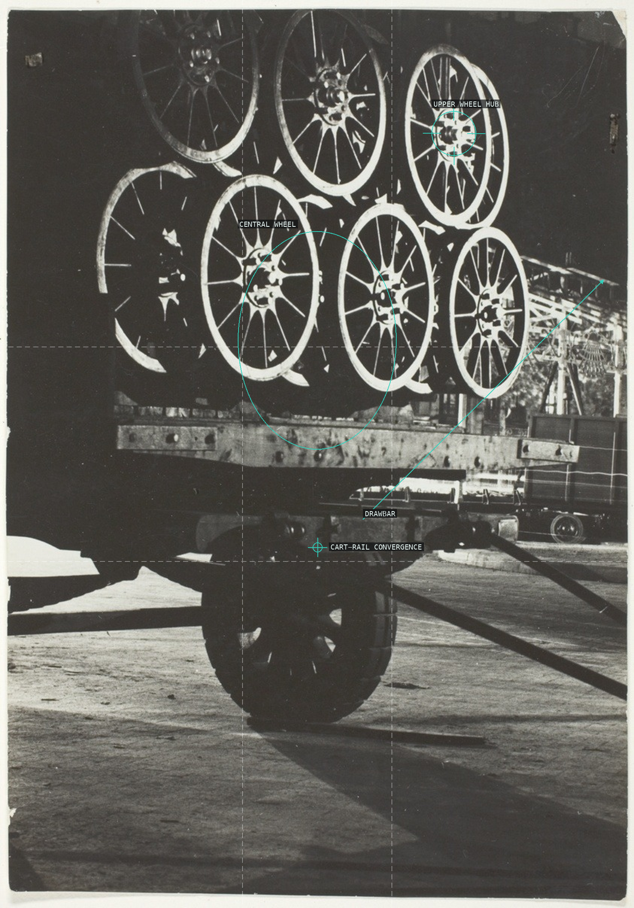
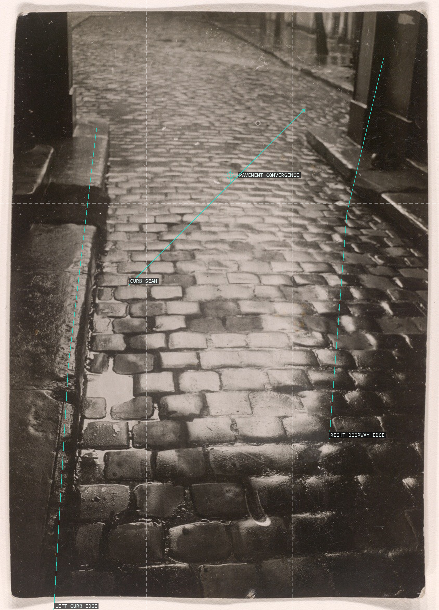

Brassaï — overlay proofs

Bijou at the Bar de la Lune, Montmartre, 1932

Two Apaches in Paris, c. 1932

Pont des Arts in Fog and Mist, 1934

Backstage at the Folies Bergère, 1932

Untitled [woman at closed storefront], 1932

Quartier Italie, 1932

Untitled (Shadows and Sidewalk, Quai Malaquais, Paris), c. 1932

Dans une Boite de Nuit (In a Nightclub), 1935

A Merry-Go-Round in Transit, 1930

Pavés Parisiens (Parisian Paving Stones), 1929